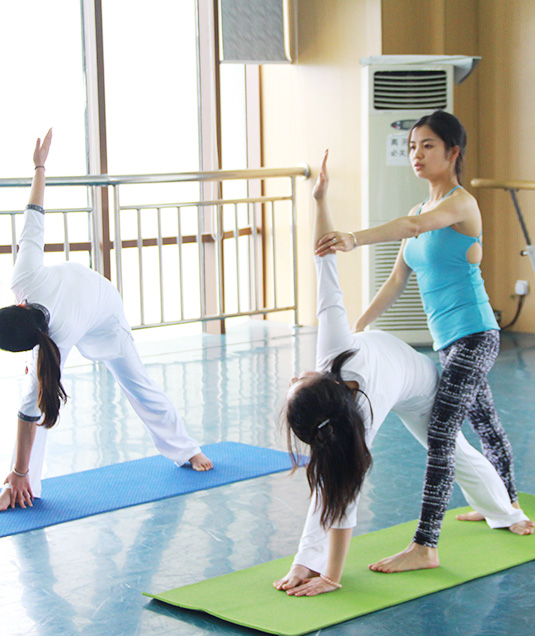
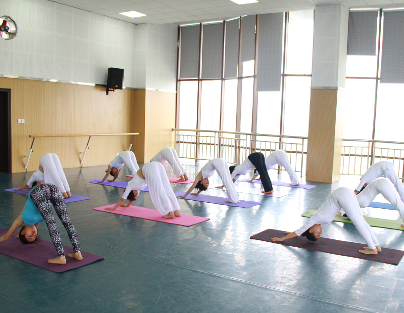

迦葉瑜伽培训学院坐落于四川省二本院校西华大学校内，上课及培训地点均在艺术学院艺术大楼专业舞蹈教室。一流的教学环境、一流的师资、正规权威，教学内容由国家人社部统一制定，并且使用人社部指定的《瑜伽师》岗位技能培训内部教材。
《瑜伽师》岗位培训依据人社部规定使用教材结合学员自身特点，有针对性的进行培训，培训过程要求严格，注重学员素质培训，旨在不断为瑜伽市场输入优秀人才。
本学院执行国家统一考核，考核通过后颁发国家人力资源和社会保障部统一印制的“国”字瑜伽师资格认证、《中国瑜伽师》证书。


迦葉瑜伽培训学院凭借自身雄厚的师资力量、一流的学习环境、高水平的素质训练、权威专业的团队支持、不断完善的技术力量与知识力量以及为学员提供后期提升和进修机会等，已成为瑜伽界的新生领头军，有着极大的发展潜力。
学院传承中国瑜伽教练市场的优良传统，同时更加注重传统的专业瑜伽培训，保证教学质量，坚决杜绝滥竽充数，禁止让照猫画虎的教练流于市场。学院一直致力于为中国正在不断发展壮大的瑜伽市场培养更多更优秀的专业。